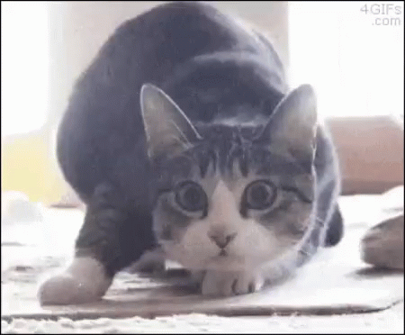

Sobre mim
Eu gosto de gatos. E gosto muito de memes de gatos. E de memes, mesmo não sendo sobre gatos. Podem ser de doguinhos também.
Eu posso gostar muito de gatos, mas não sou a louca dos gatos.
Tenho dois gatos, mas eles estão no RJ. Como eles não podem morar aqui comigo, eles ficam na lá na minha casa, com a minha mãe.
Gosto de jogos e filmes também. Em relação à jogos eu gosto bastante de jogos de mundo aberto, jogos de estratégia e de sobrevivência.
Não gosto muito de jogos de esporte e FPS, e principalmente, não gosto de jogos online.
Gosto de jogar para me distrair, e não pra passar raiva, então jogos online não!
Quanto a filmes, eu assisto de tudo, mas não sou super fã de filmes de ação sem sentido. Tipo aqueles que as pessoas só saem atirando em tudo.
Como Trabalho
Sempre vejo vídeos e fotos de gatinhos na internet.
A internet é um ótimo lugar para buscar novos conteúdos, filmes, seriados, principalmente, memes de gatinhos.
Um ótimo lugar pra começar a procurar memes é no Google.
Um bom exemplo de um meme de gatinho é esse:
